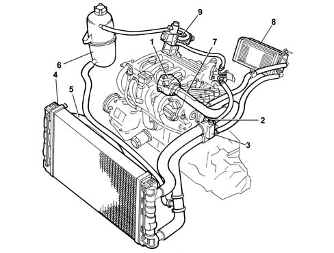

1088B ENGINE COOLING RADIATOR
- Path
- Descriptions > 10 ENGINE UNIT > 1088 ENGINE COOLING > 1088B ENGINE COOLING RADIATOR
- Kind
- system description
- Applies to
- engines: 1.6 16v; all production periods; only with equipment: BIPOWER and BLUPOWER
- Interactive page
- https://sloeber94.github.io/elrnDB-fMltpl/en/#/2888251
Applies to: engines: 1.6 16v; all production periods; only with equipment: BIPOWER and BLUPOWER
-

1, Water pump 2, Coolant temperature sensor (see 1056) 3, Thermostat 4, Radiator 5, Radiator cooling fan 6, Reservoir 7, Water pump rigid inlet pipe 8, Heater unit 9, Methane pressure reduction unit
FUEL SUPPLY TANK
In addition to supplying the system, the reservoir also absorbs the variations in volume of the cooling liquid, as the engine temperature varies.
Through a specific calibrated valve, contained in the pressurized cap:
- air emerges from the collection circuit from the pipe coming from the thermostat
- air enters when the circuit is in a vacuum (because of the engine cooling).
For leak test and test on pressurized plug see Op. 0510C30 cooling system - tightness test.
Applies to: engines: 1.6 16v; all production periods; only with equipment: Euro 3 and BIPOWER
In addition to supplying the system, the reservoir also absorbs the variations in volume of the cooling liquid, as the engine temperature varies.
Through a specific calibrated valve, contained in the pressurized cap:
- air emerges from the collection circuit from the pipe coming from the thermostat
- air enters when the circuit is in a vacuum (because of the engine cooling).
For leak test and test on pressurized plug see Op. 0510C30 cooling system - tightness test
Applies to: engines: 1.6 16v; all production periods; only with equipment: BIPOWER and BLUPOWER
RADIATOR
This consists of a radiating mass and two side tanks that allow coolant in and out.
The tubes and fins of the radiating mass are of aluminium, and the reservoirs are of plastic.
Applies to: engines: 1.6 16v; all production periods; only with equipment: Euro 3 and BIPOWER
This consists of a radiating mass and two side tanks that allow coolant in and out.
The tubes and fins of the radiating mass are of aluminium, and the reservoirs are of plastic.